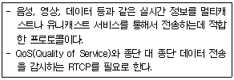
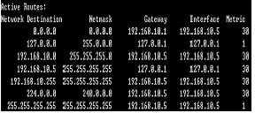

네트워크관리사-1급 (2008-04-06 기출문제)
1과목: TCP/IP
1. 10Base-T 이더넷 NIC에서 사용하는 인코딩 방식은?
- NRZ-I
- NRZ-L
- Manchester
- AMI
(정답률: 59%)

2. 전송 대역폭이 큰 순서대로 광섬유 종류를 알맞게 나열한 것은?
- 스텝 인덱스 멀티모드>그레이드 인덱스 멀티모드>싱글모드
- 싱글모드>스텝 인덱스 멀티모드>그레이드 인덱스 멀티모드
- 싱글모드>그레이드 인덱스 멀티모드>스텝 인덱스 멀티모드
- 그레이드 인덱스 멀티모드>싱글모드>스텝 인덱스 멀티모드
(정답률: 알수없음)
3. OSI 참조모델의 트랜스포트 계층에 대응하는 프로토콜은?
- TCP
- IP
- ARP
- SNMP
(정답률: 알수없음)
4. 가장 많은 Network 수를 제공하는 Class는?
- A Class
- B Class
- C Class
- D Class
(정답률: 알수없음)
5. C Class의 네트워크에서 호스트 수가 12개 일 때 분할할 수 있는 최대 서브넷 수는?
- 2
- 4
- 8
- 16
(정답률: 알수없음)
6. Internet Layer를 구성하는 프로토콜들의 헤더에 대한 설명으로 옳지 않은 것은?
- IP 헤더의 TTP 필드는 Looping에 의해 패킷이 영구히 떠도는 것을 방지하기 위한 필드이다.
- IP 헤더의 프로토콜 필드는 상위 계층의 프로토콜을 식별하기 위해 사용되는 필드이다.
- ICMP Echo Request 패킷의 Type, Code는 각각 ‘0’, ‘0’ 이다.
- ARP Request 패킷의 목적지 MAC Address는 브로드 캐스트인 “FF-FF-FF-FF-FF-FF” 이다.
(정답률: 알수없음)
7. 서브넷 마스크에 대한 설명으로 가장 올바른 것은?
- IP Address에서 네트워크 ID와 호스트 ID를 구분하고, 목적지 호스트의 IP Address가 동일 네트워크상에 있는지를 확인한다.
- 여러 개의 네트워크 Address를 하나의 Address로 통합한다.
- IP Address는 효율적으로 관리하나 트래픽 관리 및 제어가 어렵다.
- 불필요한 Broadcasting Message를 제한할 수 없다.
(정답률: 알수없음)
8. IP Address에 대한 설명으로 옳지 않은 것은?
- 하나의 TCP/IP Network 상에 접속되어 있는 복수의 컴퓨터에 동일한 Host ID를 설정할 수 있다.
- 같은 Network ID의 IP Address를 가진 컴퓨터끼리는 서로 연결하여 사용이 가능하다.
- 상호 접속하는 복수의 Network에는 동일 Network ID를 할당할 수 없다.
- Network ID가 다른 IP Address를 가진 컴퓨터는 라우터를 사용하여 통신한다.
(정답률: 알수없음)
9. IPv4와 비교하여 IPv6의 개선된 점이 아닌 것은?
- 브로드캐스팅(Broadcasting) 서비스가 가능하다.
- 규모 조정이 가능한 Routing이 가능하다.
- Mobile IP 지원이 가능하다.
- 확장된 IP Address 공간이 확보된다.
(정답률: 알수없음)
10. Tcpdump 옵션에 관한 설명 중 옳지 않은 것은?
- -e : 출력되는 각각의 행에 대해서 Link-Level 헤더를 출력한다.
- -dd : C 프로그램의 형태로 출력한다.
- -ddd : 결과를 숫자로 출력한다.
- -n : 결과 출력에서 호스트 주소와 포트 번호를 이름으로 바꾼다.
(정답률: 알수없음)
11. 현재의 TCP/IP 연결과 프로토콜 상태를 보고하는 명령어는?
- Nbtstat
- Netstat
- Ipconfig
- Tracert
(정답률: 알수없음)
12. TCP에 대한 설명 중 올바른 것은?
- IP는 데이터의 배달을 관장하고, TCP는 데이터 패킷을 추적 관리한다.
- 비연결 지향형 프로토콜이다.
- OSI 통신 모델에서 Session 계층에 속한다.
- 데이터 전송에 있어 신뢰성을 제공하지 않는다.
(정답률: 알수없음)
13. ARP에 대한 설명 중 올바른 것은?
- TCP/IP 프로토콜에서 데이터의 전송 서비스를 규정한다.
- TCP/IP 프로토콜의 IP에서 접속 없이 데이터의 전송을 수행하는 기능을 규정한다.
- 네트워크의 구성원에 패킷을 보내기 위하여 IP Address를 하드웨어 주소로 변경한다.
- 인터넷상에서 전자우편(E-Mail)의 전송을 규정한다.
(정답률: 알수없음)
14. 인터넷 프로토콜들 중에서 OSI 계층 구조상 동일한 계층에 속하지 않는 것은?
- IP
- RARP
- ICMP
- UDP
(정답률: 알수없음)
15. ICMP의 기능으로 옳지 않은 것은?
- 에러 보고 기능
- 도착 가능 검사 기능
- 혼잡 제어 기능
- 송신측 경로 변경 기능
(정답률: 60%)
16. SSH 프로토콜은 외부의 어떠한 공격을 막기 위해 개발 되었는가?
- Sniffing
- DoS
- Buffer Overflow
- Trojan Horse
(정답률: 알수없음)
2과목: 네트워크 일반
17. 무선 랜 표준 기술과 사용하는 변조방식 연결로 옳지 않은 것은?
- IEEE 802.11a - OFDM
- IEEE 802.11b - DSSS
- IEEE 802.11c - FHSS
- IEEE 802.11g - OFDM
(정답률: 알수없음)
18. Fast Ethernet에서 최종 사용자에 연결된 스위치 포트에 자동 협상(Auto Negotiation)을 사용할 것을 권장하는 이유로 올바른 것은?
- 서버나 라우터에 비해 자주 이동하기 때문임
- 서버나 라우터에 비해 속도가 느리기 때문임
- 서버나 라우터에 비해 고장의 원인이 일어나기 쉽기 때문임
- 서버나 라우터에 비해 주파수가 높기 때문임
(정답률: 알수없음)
19. TV나 라디오 방송처럼 한 쪽 방향으로만 데이터가 흐르도록 하는 전송방식은?
- Simplex 방식
- Duplex 방식
- Full-Duplex 방식
- Half-Duplex 방식
(정답률: 알수없음)
20. 주파수 분할 다중화 기법을 이용해 하나의 전송매체에 여러 개의 데이터 채널을 제공하는 전송방식은?
- 브로드밴드 전송방식
- 내로우밴드 전송방식
- 베이스밴드 전송방식
- 하이퍼밴드 전송방식
(정답률: 알수없음)
21. 비트(프레임) 동기방식에서 프레임 구간과 타이밍을 위해 사용되는 것은?
- START 비트
- STOP 비트
- FLAG 비트열
- SYN 문자
(정답률: 알수없음)
22. CRC(Cyclic Redundancy Checking) 에러검출 방법에 대한 설명으로 옳지 않은 것은?
- 프레임이 수신되면 수신기는 같은 제수(Generator)를 사용하여 나눗셈의 나머지를 검사한다.
- CRC 비트를 만들기 위해 논리합 연산을 수행한다.
- 전체 블록 검사를 위해 메시지는 하나의 긴 2진수로 간주한다.
- 메시지를 특정한 이진 소수에 의해 나눈 후 나머지를 송신 프레임에 첨부하여 전송한다.
(정답률: 알수없음)
23. 1000Baud, 16-QAM 신호의 비트율은?
- 1,000bps
- 2,000bps
- 3,000bps
- 4,000bps
(정답률: 알수없음)
24. DMB에 관한 설명으로 옳지 않은 것은?
- 디지털 오디오 방송인 DAB에서 유래 되었다.
- 멀티미디어 데이터를 전송하는 디지털방송 서비스를 의미한다.
- 전송방식에 따라 지상파 DMB와 위성파 DMB로 나눌 수 있다.
- 이동 중에는 방송을 시청할 수 없기 때문에 갭 필러라는 별도의 중계기를 설치해야 한다.
(정답률: 50%)
25. LAN 표준 프로토콜의 구조에서 논리링크제어 계층의 규정은?
- IEEE 802.1
- IEEE 802.2
- IEEE 802.3
- IEEE 802.4
(정답률: 알수없음)
26. 기가비트 이더넷(Gigabit Ethernet)의 특징 중 옳지 않은 것은?
- IEEE 803.3에 표준으로 정의되어 있다.
- 전송방식으로 기존 이더넷상의 CSMA/CD를 그대로 사용한다.
- 기존 이더넷상의 전송 속도를 초당 1기가비트까지 향상시킨 것이다.
- 기업의 백본(Backbone)망으로도 사용된다.
(정답률: 알수없음)
27. 다음 설명에 알맞은 프로토콜은?

- TCP(Transmission Control Protocol)
- SIP(Session Initiation Protocol)
- RSVP(ReSouece reserVation Protocol)
- RTP(Real-time Transfer Protocol)
(정답률: 알수없음)
3과목: NOS
28. 홈페이지의 첫 페이지를 index.htm 이라는 이름으로 서비스 하려 할 때 "인터넷 정보 서비스"에서 해야 하는 작업은?
- 기본 웹 사이트의 기본 디렉터리를 변경한다.
- 액세스 권한을 바꿔준다.
- 문서탭의 기본 문서에 index.htm을 등록한다.
- ISAPI 필터 항목 설정을 수정한다.
(정답률: 알수없음)
29. Windows 2000 Server에서 IIS(Internet Information Server) 5.0을 사용하여 구축하는 서버로 옳지 않은 것은?
- HTTP 서버
- Terminal 서버
- FTP 서버
- NNTP 서버
(정답률: 알수없음)
30. “icqa@icqa.or.kr”라는 E-Mail 주소와 가장 관련 있는 DNS 레코드는?
- SOA
- A
- CNAME
- MX
(정답률: 알수없음)
31. Windows 2000 Server에서 DNS 설치에 대한 설명으로 옳지 않은 것은?
- Windows 2000 Server는 고정 IP Address를 가지고 있어야 한다.
- DNS 서비스는 설치 시 자동으로 설치가 되지 않아 사용자가 직접 설치해야 한다.
- 관리자 권한이 있는 계정으로 로그온 하여야 한다.
- DNS 서비스는 Active Directory와 관련이 없다.
(정답률: 알수없음)
32. Windows 2000 Server에서 DNS와 비슷하게 NetBIOS 이름을 IP Address에 맵핑하는 기능을 지원하는 서비스는?
- WINS
- HTTP
- Proxy
- SNMP
(정답률: 알수없음)
33. Windows 2000 Server로 FTP를 운영할 때, AD나 로컬계정에 정상적으로 등록된 사용자만이 연결 할 수 있게 하고, 외부의 익명연결 사용자들이 접속을 거부할 수 있도록 설정할 수 있는 탭은?
- FTP 사이트 탭
- 디렉터리 보안 탭
- 보안 계정 탭
- 홈 디렉터리 탭
(정답률: 알수없음)
34. OU(Organization Unit)에 대한 설명으로 올바른 것은?
- 하나의 관리 단위로서 공통성을 가진 작업 그룹
- 포리스트 내의 모든 도메인에 대한 개체 정보
- 사용자나 컴퓨터 등 물리적으로 구분되는 독립 단위
- 액티브 디렉터리에서 각종 보안 및 정책 관리의 최소 단위
(정답률: 알수없음)
35. 관리자가 사용자의 계정을 관리하기 위해 할 수 있는 행동으로 가장 옳지 않은 것은?
- 암호가 없거나 너무 쉬운 계정은 사용 중지를 시키거나 경고를 주어 암호를 변경 하도록 한다.
- 계정 만료 기간을 두어 일정 기간이 지나면 해당 계정을 사용하지 못하게 한다.
- 오랫동안 사용되지 않은 계정은 통보 없이 사용 중지 시키고 삭제한다.
- 한 사용자가 하나의 컴퓨터에서만 로그인 할 수 있게 설정한다.
(정답률: 알수없음)
36. 라우팅은 패킷이 출발 시스템에서 목적 시스템까지 가는 길을 찾는 과정이다. 아래 화면은 "Route Print"를 이용하여 현재의 라우팅 정보를 보여주고 있다. 기본 게이트웨이 주소는?

- 127.0.0.1
- 192.168.10.1
- 192.168.10.5
- 255.255.255.0
(정답률: 알수없음)
37. 마운트에 대한 설명으로 올바른 것은?
- Linux에서 CD-ROM은 마운트 하지 않고 바로 사용할 수 있다.
- 플로피 디스크드라이브는 "#mount -t iso9660 /dev/ fd0/ mnt/floppy"와 같은 방법으로 마운트 시킨다.
- 마운트를 해제하는 명령어는 "unmount"이다.
- 해당 파일시스템이 사용 중이면 "mount"가 해제되지 않는다.
(정답률: 40%)
38. Linux 시스템의 파일 사용자 허가에 대한 설명으로 옳지 않은 것은?
- 사용 허가의 3가지 부분으로 나눠지며, 이것은 읽기(Read), 쓰기(Write), 실행(Execute) 가능 허가이다.
- Linux 시스템은 다중 사용자 시스템이기 때문에 파일 사용 허가라 불리우는 메커니즘을 제공한다.
- 사용 허가의 문자열 “rwx”를 십진수로 나타내면 r은 4, w는 2, x는 0 이다.
- 문자열 “-rwxrwxrwx”에서 '-'는 일반 파일을 의미한다.
(정답률: 알수없음)
39. Linux 시스템에서 RPM에 사용하는 옵션 "--nodeps"의 의미는?
- 어떤 패키지의 의존성을 무시하고 설치하고자 할 때
- 디렉터리를 마치 ‘/’ 처럼 생각하고 설치하고자 할 때
- 패키지를 실제로 설치하지는 않고 충돌이나 의존성 문제가 있는지만 검사 할 때
- 새로운 패키지를 지우고, 구버전의 패키지로 교체 할 때
(정답률: 알수없음)
40. 레드햇 계열 배포판의 패키지 관리 도구로 Linux의 소프트웨어 설치와 제거, 업그레이드 등 여러 가지 시스템의 유지보수를 위해 많은 기능을 제공하는 유틸리티는?
- gun
- linuxconf
- rpm
- makeq
(정답률: 알수없음)
41. SQL Server에 대한 설명으로 옳지 않은 것은?
- SQL문을 이용하여 데이터를 기록, 삭제, 검색, 편집이 가능하게 하는 클라이언트/서버 프로그램이다.m
- 데이터베이스 관리프로그램으로 일반사용자도 쉽게 사용할 수 있는 인터페이스를 가지고 있다.
- 기본적으로 ANSI 표준을 따르지 않는다.
- 분산 데이터베이스 기능과 복사의 개념을 가지고 있다.
(정답률: 알수없음)
42. Linux에서 네트워크 설정에 관한 설명으로 옳지 않은 것은?
- Linux는 Windows 시스템과 같이 완벽한 PnP 기능을 지원하지 못한다.
- LAN 카드 설치는 Linux 커널에 드라이버를 포함시키거나, 필요할 때마다 메모리에 로딩 할 수 있다.
- LAN 카드를 메모리에 로딩해서 사용하려면 modprobe명령을 사용한다.
- 네트워크 설정은 ipconfig 로 확인 할 수 있다.
(정답률: 알수없음)
43. httpd.conf 파일을 사용하여 Apache 웹 서버를 설정하려 한다. 주요 설정 항목에 대한 설명으로 옳지 않은 것은?
- ServerRoot : 아파치 웹서버의 각종 설정 파일이 있는 디렉터리를 지정한다.
- Listen : 아파치 웹서버가 사용할 기본 포트(80번)를 설정한다.
- DocumentRoot : 웹사이트에 사용될 각종 파일들이 위치한 디렉터리를 지정한다.
- ServerType : 서버의 실행 방법을 지정하며, Single Mode와 Multi Mode가 있다.
(정답률: 알수없음)
44. Linux 시스템의 Sendmail 관련 설정 파일에 관한 설명으로 옳지 않은 것은?
- sendmail.cf : sendmail 주 설정 파일
- local-host-names : 가상 메일 서비스를 위한 가상 도메인 이름 지정
- access : sendmail 서버로 접근제한
- aliases : 사용자에 대한 alias 작성
(정답률: 알수없음)
45. Linux 시스템에 네트워크 설정과 관련 없는 파일은?
- /etc/sysconfig/network
- /etc/motd
- /etc/resolv.conf
- /etc/sysconfig/network-scripts/ifcfg-eth0
(정답률: 알수없음)
4과목: 네트워크 운용기기
46. 스테틱 라우팅(Static Routing) 프로토콜에 대한 설명으로 옳지 않은 것은?
- 라우팅 경로가 자주 변경되거나 라우터가 자주 추가되는 상황에 적합하다.
- 라우터의 메모리 낭비가 적어 메모리 사용에 유리하다.
- 일반적으로 다이나믹 라우팅 프로토콜에 비해 우선순위가 높다.
- 우회 경로가 없는 Stub 네트워크에서 사용하기에 좋은 프로토콜이다.
(정답률: 알수없음)
47. 라우터에 대한 설명 중 가장 옳지 않은 것은?
- 하나의 네트워크를 서브넷 마스크에 의해 분할 할 때 서브넷 단위로 분할하는 방법을 말한다.
- 조직 내의 네트워크와 인터넷을 접속시킬 때 필요한 장비이다.
- 라우팅 기능에 의해 서로 다른 네트워크 어드레스를 사용하고 있는 네트워크 사이에 통신을 가능하게 한다.
- 접속되어 있는 네트워크 어드레스의 정보인 라우팅 테이블을 작성 및 관리한다.
(정답률: 알수없음)
48. 리피터(Repeater)에 대한 설명으로 올바른 것은?
- 콜루젼 도메인(Collision Domain)을 나누어 주는 역할을 한다.
- 필터링과 포워딩 기능을 수행한다.
- 전송거리 연장을 위한 장비이다.
- 브로드캐스트 도메인(Broadcast Domain)을 나누어 주는 역할을 한다.
(정답률: 알수없음)
49. 변환기(Translator)로서 동작하며 다른 운영 시스템(UNIX, Windows) 사이에서 통신을 제공하는 네트워크 장비는?
- Router
- Gateway
- Brouter
- Access Point
(정답률: 알수없음)
50. 네트워크 관리 시스템(NMS)에 대한 설명으로 옳지 않은 것은?
- 원격에서 네트워크 장비를 관리하는데 사용된다.
- 장비의 현재 상태, 접속 현황, 에러 현황 까지도 알 수 있다.
- 장비의 리부팅까지 가능하다.
- 주로 SMTP라는 프로토콜을 사용하여 관리한다.
(정답률: 알수없음)
5과목: 정보보호개론
51. 보안 모델에서 현재 새로운 네트워크 공격 기법의 특징 중, 침입탐지시스템(IDS) 등의 보안 시스템을 우회하기 위하여 많은 수의 시스템에서 단일의 시스템을 공격하는 방법은?
- 에이전트화
- 분산화
- 자동화
- 은닉화
(정답률: 알수없음)
52. Windows 2000 Server 시스템에서 로컬 사용자 및 로컬 그룹의 계정정보 및 이와 관련된 정보를 저장한 데이터베이스에 해당하는 것은?
- SAM
- Active Directory
- SRM
- WinLogon
(정답률: 알수없음)
53. 아파치(Apache) 웹 서버의 로그에서 확인 할 수 없는 정보는?
- 클라이언트의 IP Address
- 클라이언트의 요청 페이지
- 클라이언트의 접속 시도 날짜
- 클라이언트의 게시판 입력 내용
(정답률: 알수없음)
54. DoS 공격에 대한 설명으로 올바른 것은?
- 하나의 대상 시스템에는 하나의 공격자만 공격을 할 수 있다.
- 대상 시스템의 자원 및 서비스를 사용할 수 없게 한다.
- Windows 시스템만 공격할 수 있다.
- 패킷 필터링으로 방어가 가능하다.
(정답률: 알수없음)
55. 네트워크 서비스 거부 공격 중 공격자의 공격 입력 전달 방법에 있어서 그 성격이 나머지 것과 다른 것은?
- TCP SYN Flood
- Smurfing
- Land
- ICMP Flood
(정답률: 알수없음)
56. 방화벽에 대한 설명으로 가장 옳지 않은 것은?
- 외부 네트워크와 내부 네트워크를 구분 짓는 장치이다.
- 내부 사용자의 접근이 완전 봉쇄되어 해킹의 위협으로 부터 보호된다.
- 내부 네트워크와 외부 네트워크에 오가는 모든 통신을 감시한다.
- 내부 네트워크와 외부 네트워크 사이에서 양자 간의 연결점 역할을 수행하는 시스템을 의미한다.
(정답률: 알수없음)
57. 디지털 서명의 필수 요건으로 옳지 않은 것은?
- 재사용 가능
- 서명자 인증
- 변경 불가
- 위조 불가
(정답률: 알수없음)
58. 회사의 사설 네트워크와 외부의 공중 네트워크 사이에 중립 지역으로 삽입된 소형 네트워크를 의미하는 용어는?
- DMZ
- Proxy
- Session
- Packet
(정답률: 알수없음)
59. S/MIME에 대한 설명으로 옳지 않은 것은?
- 전자우편 보안 서비스로, HTTP에서는 사용이 불가능하다.
- X.509 형태의 S/MIME 인증서를 발행하여 사용한다.
- 전자 서명과 암호화를 동시에 사용할 수 있다.
- 대칭키 암호 알고리즘을 사용하여 전자우편을 암호화 한다.
(정답률: 알수없음)
60. 개정 주민등록법(2006년 9월 25일 시행)의 "주민등록번호 도용"에 대한 설명으로 올바른 것은?
- 개정 이전 단순 도용에 대해서도 처벌 받는다.
- 가족의 주민등록번호를 도용했을 경우 처벌을 원하지 않아도 처벌 받는다.
- 개정 이전에 도용한 주민등록번호를 잊어서 탈퇴(해지)하지 못하는 경우에는 처벌 받지 않는다.
- 도용당한 사람이 도용 사실을 알지 못하면, 계속 도용해도 처벌 받지 않는다.
(정답률: 알수없음)